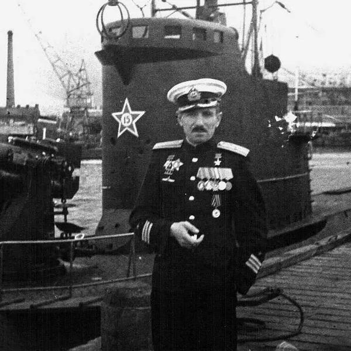
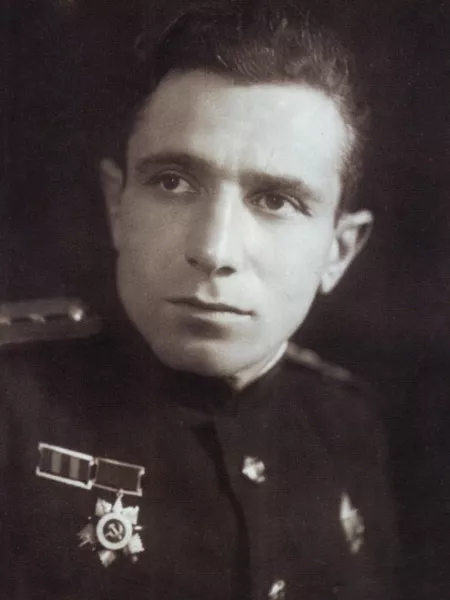
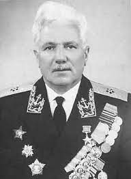

Владимир Константинович Коновалов (5 декабря 1911 - 29 ноября 1967) -
советский подводник, Герой Советского Союза.

Владимир Константинович (Вульф Калманович) Коновалов родился 5 декабря 1911 года в селе Надёжное (ныне Розовский район, Запорожской области, Украина) в семье еврейского происхождения. Земледельческая колония Надёжное была основана еврейскими выходцами из Виленской губернии в 1855 году. Начиная с 1869 года в этом поселении проживала семья Арье Коновала, которая со временем получила фамилию Калманович.
После Октябрьской революции и окончания Гражданской войны семья переехала в Юзовку (ныне Донецк), где его отец сумел найти работу на мельнице. По окончании шести классов школы работал на заводе «Древометалл». В 1932 году окончил 3 курса вечернего рабфака при Донецком горном институте (в настоящее время Донецкий национальный технический университет). В том же году по путёвке комсомола был направлен в Ленинград, в военно-морское училище им. М. В. Фрунзе, которое окончил в 1936 году.
После окончании училища служил на Черноморском флоте штурманом подводной лодки «М-51», типа «Малютка». С августа 1936 по июнь 1938 года занимал различные должности в авиации Черноморского флота, затем получил назначение на подводную лодку «Д-4» «Революционер», где был сначала штурманом, а затем помощником командира (до января 1939 года). В ноябре 1940 года, после окончании Высших Специальных Курсов Командного Состава при Учебном Отряде подплава им. Кирова, назначен помощником командира минного заградителя «Л-3» «Фрунзенец» Краснознамённого Балтийского флота, которой командовал капитан 3-го ранга П. Д. Грищенко.

Участник Великой Отечественной войны с июня 1941 года. По итогам боевых действий 1941 года капитан подлодки «Л-3» Грищенко при аттестовании Коновалова пришёл к следующим выводам: «По своей подготовке может [быть] назначен командиром подводной лодки, но сейчас желательно пока оставить на этой должности до конца войны». В период с начала войны до конца 1942 года в составе экипажа подлодки «Л-3» Коновалов совершил пять боевых походов на дозорную службу, прикрытие фланга сухопутных войск с моря, постановку минных заграждений, нарушение морских коммуникаций противника. За это время (18 августа 1942) подлодкой «Л-3» был потоплен шведский пароход «К. Ф. Лильевальш» (водоизмещение 5513 брутто тонн). Кроме того, на выставленных Л-3 минах подорвались финский пароход «Сисиль» (1847 брт, 23.08.1941), немецкий пароход «Хенни» (764 брт, 19.11.1941), немецкий теплоход «Энгерау» (1142 брт, 26.11.1941). По итогам кампании 1942 года командование увидело прогресс в его качествах, и он признан достойным быть выдвинутым на должность командира подлодки.
25 февраля 1942 года назначен командиром подлодки «Л-3», а Грищенко был переведён в Отдел подводного плавания флота. В марте 1943 года подлодке было торжественно присвоено гвардейское звание, к которому она была представлена за действия в ходе кампании 1942 года: «за проявленную отвагу в боях за Отечество с немецкими захватчиками, за стойкость и мужество, за высокую воинскую дисциплину и организованность, за беспримерный героизм личного состава». После этого, в связи с полученными тяжёлыми повреждениями, она была признана не готовой к участию в кампании 1943 года и корабль был направлен на проведение ремонта. После этого капитан-лейтенант Коновалов был направлен в длительную командировку на Тихоокеанский флот, где проходил подготовку на подлодках типа «Ленинец» (XII серии), и возвратился на Балтику в октябре 1944 года. Он вновь принимает командование подлодкой «Л-3», на которой в начале 1944 года был закончен текущий ремонт, и к октябрю она числилась полностью готовой к выполнению поставленных боевых задач.
В начале октября 1944 года подлодка вышла с базы для действий в южной части Балтийского моря. Экипажем корабля были выставлены мины в 12 милях северо-восточнее мыса Аркона, находящегося на значительном расстоянии от фарватера Заениц—Треллеборг, который требовалось заминировать согласно приказу командования. По возвращении корабля из рейда в штабе бригады подводных лодок флота действия капитана подвергли критике, а комбриг С. Б. Верховский признал кампанию «явно неудовлетворительной». Однако, несмотря на осторожный характер действий капитана подлодки, мины оказались удачно расположены в районе полигона боевой подготовки кораблей немецкого военно-морского флота. 14 ноября 1944 года подорвалось и получило значительные повреждения учебное парусное судно «Альберт Лео Шлагетер», а 20 ноября недалеко от предыдущей катастрофы мина сработала под новейшим миноносцем «Т-34» (тип 1939), в результате чего была оторвана его кормовая оконечность, корабль перевернулся и затонул. На борту затонувшего корабля погибли 55 членов экипажа, 2 офицера и 22 матроса артиллерийской школы. Несмотря на несколько проведённых атак, дальнейшие действия экипажа судна в районе берегов Швеции, латвийского порта Либавы (ныне Лиепая) и литовского Мемеля (ныне Клайпеда), оказались нерезультативными, что современные исследователи объясняют слишком осторожной тактикой и малоактивными действиями капитана. В ноябре 1944 года командование дало разрешение кораблю вернуться на базу. Комбриг Верховский расценил действия экипажа корабля в целом удовлетворительными, но подверг критике командира Коновалова, а выполнение им боевых задач счёл «неудовлетворительными, неумелыми, неправильными и излишне осторожными». Однако, несмотря на такую характеристику, все члены экипажа были награждены орденами и медалями, а командир — орденом Красного Знамени. В боевой характеристике за 1944 год комдив А. Е. Орёл, отмечая, что Коновалов действовал не активно, что, по его мнению, объясняется первым самостоятельным рейдом в качестве командира подлодки, пришёл к выводу: «Должности командира лодки вполне соответствует».
В целом в ходе кампаний 1944—1945 годов «Фрунзенец» совершил три боевых похода. На подходах к базам противника и на его морских сообщениях было выставлено 50 различных минных заграждений. Активно действовал возглавляемый Коноваловым экипаж в ходе проведения сухопутными войсками наступательной военной операции на Земландском полуострове (ныне Калининградский полуостров) 3-го Белорусского фронта, предпринятого во взаимодействии с Балтийским флотом, а также при высадке десанта на косу в районе Пиллау (ныне Балтийск) в Восточной Пруссии. Вместе с другими подлодками Балтийского флота «Фрунзенец» надёжно перекрыл район военных действий с моря, препятствуя сообщению между базами снабжения противника.
В свой последний (восьмой) поход подлодка вышла 23 марта 1945 года. Командование поставило перед членами команды задачу вести боевые действия в районе Данцигской бухты, а конкретно перекрыть подходы к полуострову Хель. 17 апреля 1945 года, находясь в боевом походе в Данцигской бухте, подлодка «Л-3», под командованием Коновалова, преследовала и потопила немецкий транспорт «Гойя» водоизмещением 5230 брт, который вёз около 7 тысяч военнослужащих вермахта и беженцев (точное количество находившихся на борту осталось неизвестным и является предметом дискуссий). Из них спаслось только 195 человек. Чтобы догнать теплоход «Л-З», пришлось идти в надводном положении, что было сопряжено с большим риском (в подводном положении электродвигатели не могли развить требуемую скорость). После успешного залпа сторожевые корабли стали преследовать подлодку, но Коновалов сумел оторваться от погони. Гибель почти 7 тысяч человек на борту одного судна поставило катастрофу «Гойи», наряду с потоплением в том же районе лайнера «Вильгельм Густлофф» после торпедной атаки подводной лодки «С-13» под командованием А. И. Маринеско как одну из крупнейших морских катастроф. По некоторым данным, потопление транспорта «Гойя» является крупнейшей морской катастрофой за всю историю по числу жертв.
В ночь с 19 на 20 апреля подводники атаковали передвигающийся на запад конвой кораблей, но неудачно. 21 апреля подлодка израсходовала последние торпеды по крупному конвою, направлявшемуся из Данцигской бухты в Копенгаген, но также безуспешно. 25 апреля корабль прибыл на базу в Турку, где экипаж корабля встретил День Победы
Подлодка, возглавляемая Грищенко и Коноваловым, является одним из немногих подводных кораблей Балтийского флота, которые прошли Великую Отечественную войну с первых дней до её окончания. В соответствии с менявшимися со временем советскими оценками, «Л-З» заняла первое место среди подводных лодок по количеству и тоннажу потопленных вражеских судов: 25 фашистских военных кораблей и транспортов общим водоизмещением 51 918 тонн и 4 судна были повреждены. На момент окончания войны считалось, что экипаж уничтожил 15 кораблей и судов, но к концу 1960-х годов количество побед постепенно было увеличено до 28. Из них по доступным для изучения немецким документам прослеживается 13, в том числе 10 — подорвавшихся на минах. По современным данным на боевом счету корабля наличествует 7 потопленных и один повреждённый корабль противника.
Указом Президиума Верховного Совета СССР от 8 июля 1945 года за образцовое выполнение боевых заданий командования, личное мужество и героизм, проявленные в боях с немецко-фашистскими захватчиками, гвардии капитану 3-го ранга Коновалову Владимиру Константиновичу присвоено звание Героя Советского Союза с вручением ордена Ленина и медали «Золотая Звезда».
После войны продолжил службу на «Л-3», затем с октября 1946 по ноябрь 1947 года командовал подлодкой «Н-27» (бывшая германская «U-3515» XXI серии) 4-го ВМФ. В 1950 году окончил Военно-морскую академию имени К. Е. Ворошилова, после чего до января 1955 года был начальником кафедры тактики 2-го Балтийского высшего военно-морского училища. С января по ноябрь 1955 года — начальник штаба, с ноября 1955 года по март 1958 года — командир бригады подводных лодок Краснознамённого Балтийского флота. С марта 1958 года по май 1961 года — заместитель начальника 1-го отдела Управления начальника военно-морских учебных заведений, затем по август 1966 года — заместитель начальника штаба по боевому управлению Краснознамённого Северного флота.
7 мая 1966 года капитану 1-го ранга присвоено воинское звание контр-адмирал. С августа 1966 года — заместитель начальника Высшего военно-морского училища подводного плавания имени Ленинского комсомола.
Скончался от инфаркта 29 ноября 1967 года в Ленинграде, похоронен на Красненьком кладбище.
